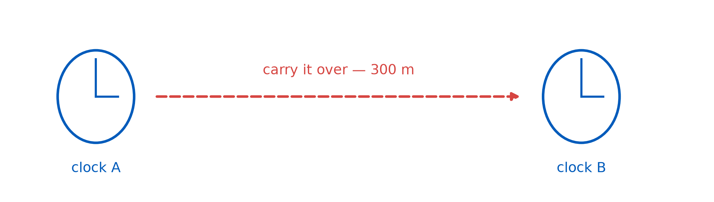
Time Dilation
PHY 208 · Special Relativity · Lecture 5
Tim Thomay
2026-09-08
Before we start: pairs are live
Pairs are announced. UB Learns → Announcements → “Presentation pairs” — the link in that announcement shows your group, with both names.
From today, “work in your pairs” means exactly that. First pair job is later this class.
Thursday’s exit ticket
“The train observer only thinks the strikes weren’t simultaneous — she just received the light at different times.”
Two of your answers — two procedures, one verdict:
Correct the signal
“Frame calculations subtract the light travel time… the events actually occurred at different times in her frame.”
Ask the lattice
“She is using a latticework of synchronised clocks… she checks the records of the strikes.”
She is not fooled — and today that starts costing time itself.
The question we owe L03
L03: “Why not synchronize by carrying one clock over?”
Because moving a clock changes what it reads. Today: by exactly how much.
It is raining
Right now, about one particle per square centimeter per minute is falling through this room. Through the ceiling, through you.
Each one was born 15 km up — and should have died long before the floor.
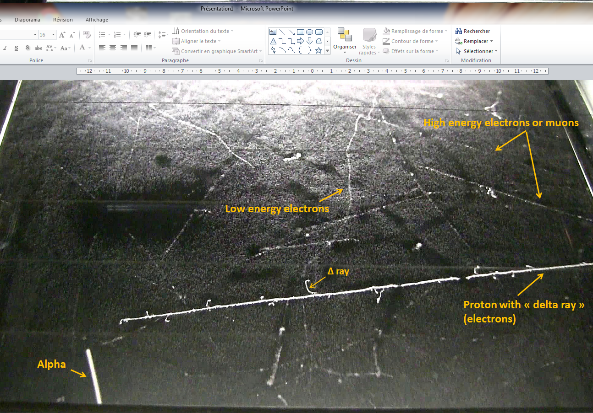
What a clock actually measures
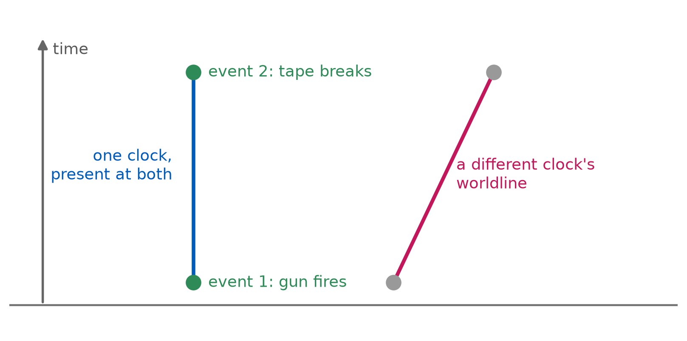
Proper time \(\Delta\tau\): the time between two events read off one clock that is present at both.
The most honest clock in physics
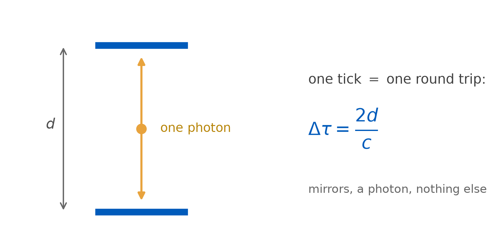
The light clock, live — predict first
Two identical light clocks. One sits still; one flies past at \(0.8c\). Both photons do exactly \(c\) — that is not negotiable.
In your notebook, before anything runs:
When her clock shows 6 ticks, what does yours show — more, fewer, or the same? Commit — with a number if you dare, and one line of why.
We then slide the speed up toward \(0.95c\). What happens to her photon’s speed — and what does its path do instead?
What you just watched, frozen
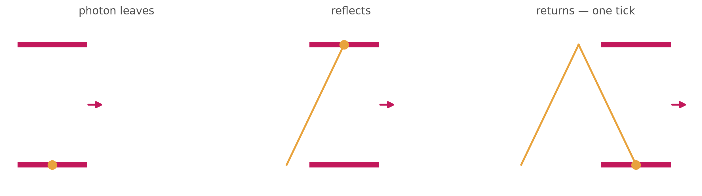
Same mirrors, same photon — but in your frame the photon travels a zigzag, and the zigzag is longer than the straight bounce.
Postulate 2: the photon does \(c\) for you too. Longer path at the same speed → the moving clock’s tick takes longer.
The geometry is eighth grade
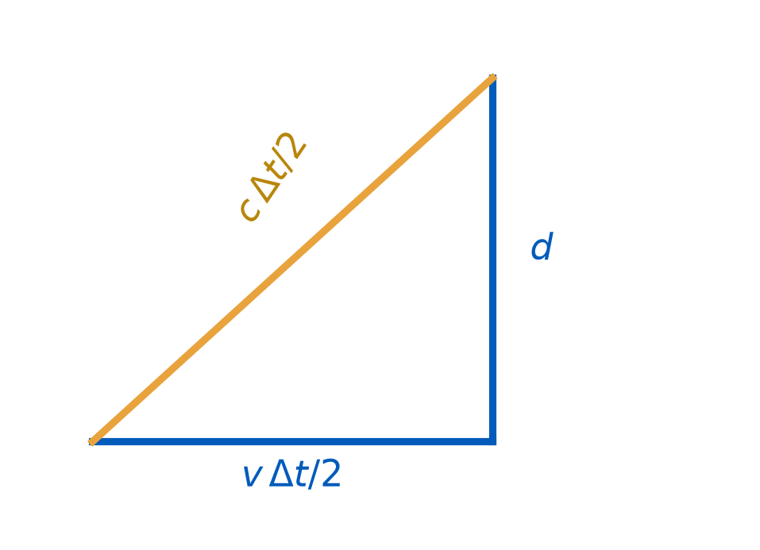
\[\left(\frac{c\,\Delta t}{2}\right)^{2} = d^{2} + \left(\frac{v\,\Delta t}{2}\right)^{2}\]
Solve for \(\Delta t\), use \(\Delta\tau = 2d/c\):
\[\Delta t = \frac{\Delta\tau}{\sqrt{1 - v^{2}/c^{2}}} = \gamma\,\Delta\tau\]
Meet \(\gamma\)
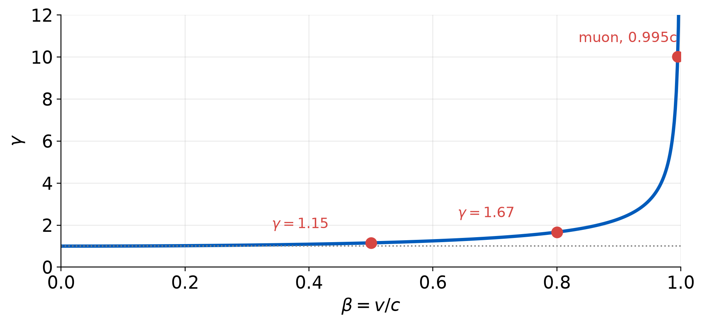
Your lab partner flies past at \(0.8c\). Each of you carries an identical clock. You measure her clock ticking slow.
What does she measure about your clock?
(a) It ticks fast
(b) It ticks at the normal rate
(c) It ticks slow
(d) It depends on which of you accelerated in the past
Both see the other slow. That is not a contradiction
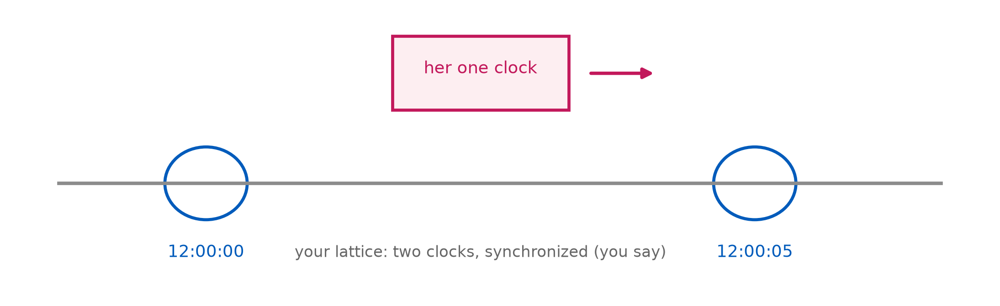
Rating her clock takes two of yours — one where she starts, one where she ends. She answers: those two were never synchronized (Thursday!).
Each comparison uses a different pair of clocks. No clock is ever caught disagreeing with itself.
Light does not get a clock
| photon | massive object (you, a muon) | |
|---|---|---|
| speed | \(c\), always | anything but \(c\) |
| rest frame | none | one — its own |
| proper time | none — no clock ticks | ticks between any two events |
| needs \(\gamma\)? | no | yes |
The light clock works because light carries no clock of its own — the photon is the ruler, never the thing being timed.
The muon
| what | the electron’s heavy sibling — 207 × the mass, same charge |
| born | cosmic-ray collisions ~15 km up, at \(v \approx 0.995c\) |
| dies | \(\mu \to e + \nu + \bar{\nu}\) — always, no exceptions |
| lifetime | \(\tau = 2.2\ \mu\text{s}\) (mean — next slide!), on its own wristwatch |
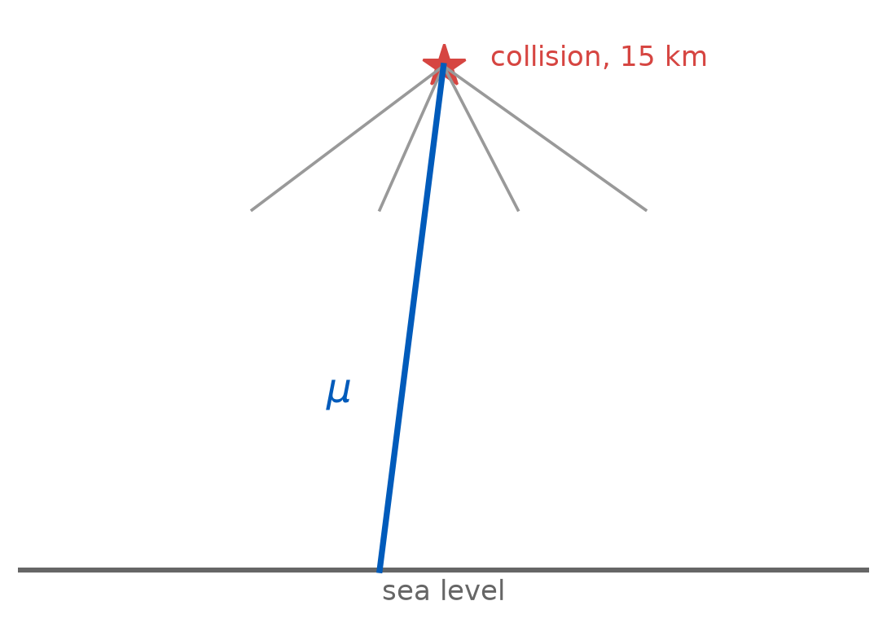
An average, not an alarm clock
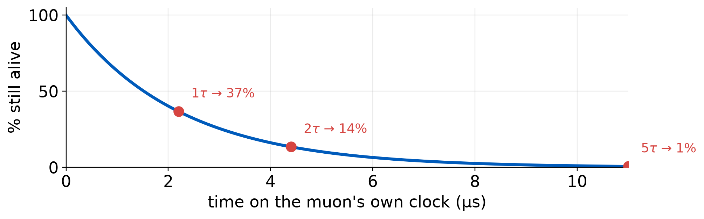
\(N = N_0\,e^{-t/\tau}\) — no fuse, the same dice every instant. \(\tau = 2.2\ \mu\)s is the mean, not a deadline.
It should never reach the floor
distance light-speed allows a 2.2 us clock: c*tau = 660 m
distance it must cover: 15000 m
fraction surviving 15 km classically: e^(-15000/660) = 1.3e-10Newton’s verdict: about one muon in ten billion survives. The measured rain says otherwise — they arrive in droves.
Time dilation saves it
gamma at 0.995c = 10.0
lab-frame mean lifetime = 22 us
decay length gamma*beta*c*tau = 6.6 km
surviving 15 km: e^(-15/6.6) = 10%In your frame the muon’s clock runs slow by \(\gamma \approx 10\). Its 2.2 μs stretch to 22 μs — and one in ten arrives. That is the rain.
They checked, twice
| where | found | |
|---|---|---|
| Rossi & Hall, 1941 | Echo Lake, CO → Denver | muon loss with altitude fits \(\gamma\tau\), not \(\tau\) |
| Frisch & Smith, 1963 | Mt. Washington → sea level | filmed it: survival ~13× the classical prediction |
First job as a pair
How much does motion cost YOU? With your pair, compute \(\gamma - 1\) (use \(\gamma - 1 \approx \tfrac{1}{2}\beta^{2}\) for small \(\beta\)) for:
- an airliner, \(v = 250\) m/s
- the ISS, \(v = 7.7\) km/s
- a GPS satellite, \(v = 3.9\) km/s
Then turn each into time lost per day of flight (86 400 s). One phone calculator per pair; one page, both names, keep it.
What you just computed
v (m/s) gamma-1 per day
airliner 250 3.5e-13 0.03 us
ISS 7700 3.3e-10 28.50 us
GPS satellite 3900 8.5e-11 7.31 usNobody ever felt time dilation. Below \(10^{-4}c\), \(\gamma - 1\) is parts per billion — which is why it took until 1905 to notice it in principle, and until 1941 to see it.
And yet clocks are now good enough
Hafele–Keating, 1971. Four cesium clocks flown around the world on airliners, then compared with the ones left home.
| direction | predicted | measured |
|---|---|---|
| eastward | \(-40 \pm 23\) ns | \(-59 \pm 10\) ns |
| westward | \(+275 \pm 21\) ns | \(+273 \pm 7\) ns |

Where it bites: GPS, again
Satellite clocks run slow by ~7 μs/day from their orbital speed — your pair just computed it.
Uncorrected, that is ~2 km of position error per day, growing.
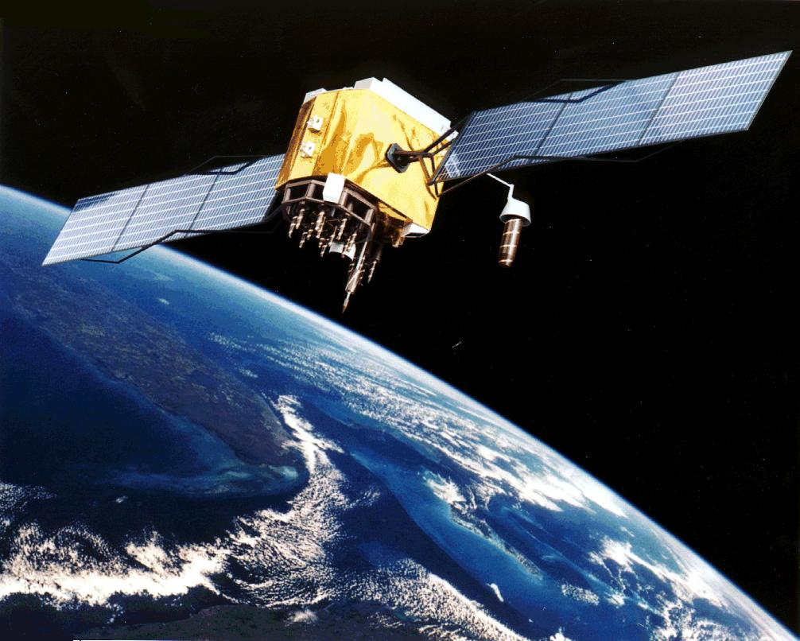
What today actually changed
| before 11:00 | after 12:20 |
|---|---|
| one universal rate of time | each worldline carries its own |
| “how long” has one answer | proper time vs. lattice time |
| moving clocks are odd | moving clocks run slow — by \(\gamma\), symmetrically |
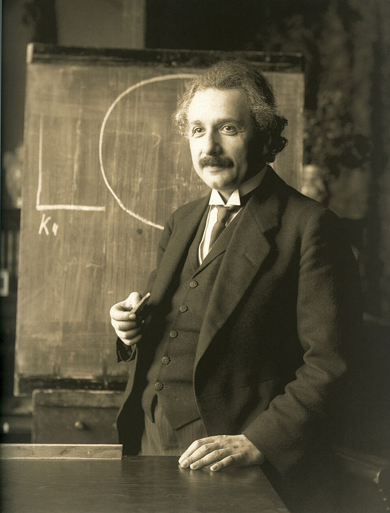
Thursday
Length contraction
| The muon’s own verdict | its clock is fine — so the atmosphere must be short |
| Reading | TW ch. 3 (same as this week) |
| Problem set 2 | due Sun 11:59 pm |
| Demo notebook | light-clock entry due 11:00 Thursday |
Exit ticket
A student says: “The muon result proves that moving clocks really run slower — the muon’s clock was truly the slow one.”
In one or two sentences, what is wrong with this?
Scan it, or find it on UB Learns. Due 11:59 tonight.
Not graded, ever — I read these to decide what to spend class time on. “I don’t follow this, and here is where I lost it” is a useful answer.
PHY 208 — Time Dilation Tim Thomay · University at Buffalo · Fall 2026
Course material licensed CC BY-SA 4.0
Images retain their original licenses — see img/CREDITS.md